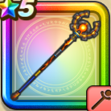

インフェルノワンド
攻略班 8.0点 / ピオリムマジックブースト閃烈ベギラゴングランドインフェルノ※錬成で強化可能
くわしい特徴
【レベル別習得スキル】 Lv1【魔法戦士】さいだいMP+5 Lv1ピオリム（消費MP：16）使用時含む5ターンの間、仲間全員のすばやさを1段階上げる Lv10マジックブースト（消費MP：17）味方1人の呪文ダメージをアップさせる Lv15ギラ属性呪文ダメージ+10% Lv20閃烈ベギラゴン（消費MP：31）敵全体にギラ属性の呪文ダメージを与える Lv30グランドインフェルノ（消費MP：26）敵1体にギラ属性の呪文特大ダメージを与える Lv35物質系へのダメージ+5% Lv40鳥系へのダメージ+5% Lv45さいだいMP+12 Lv50攻撃魔力+12錬成スキル改1鳥系へのダメージ+10%改2グランドインフェルノ改（消費MP：45）敵1体にギラ属性の呪文特大ダメージを与え、ごくまれに耐性を無視して呪文を封じる改3物質系へのダメージ+10%改4錬成ぶき特別演出解放・メガモン討伐結果発表時に特別演出が追加・武器の見た目に特別なエフェクトが追加 【限界突破スキル】 1凸じゅもんダメージ+5% 2凸じゅもんダメージ+5% 3凸じゅもんダメージ+5% 4凸じゅもんダメージ+5%